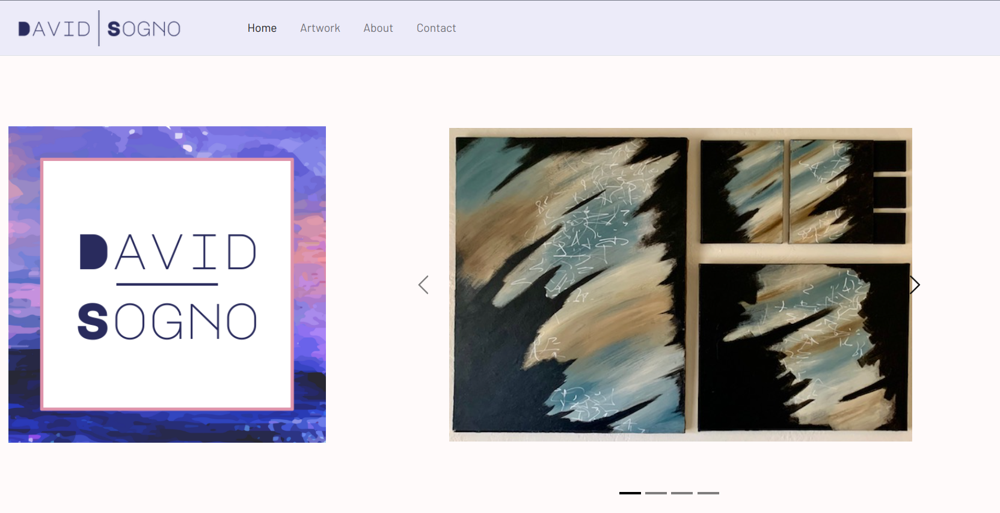

David Sogno is a fullstack web application that was the capstone project for the Java Fullstack Developer bootcamp program at GenerationUSA. Built from scratch, this project allowed me to review the curriculum I was teaching to students in the program (and revise our instructions as needed) and put into practice core concepts such as OOP, MVC architecture, and REST.
Links
GitHubProject Purpose and Goals
There were 4 sprints for this project. Sprint 1 focused on the frontend with UI/UX design and wireframing, scaffolding, and CSS styles. In Sprint 2, JavaScript was added to create the functionality of the application, simulating the backend via Fetch calls to JSON files and localStorage. Sprint 3 moved to the backend with building a REST API with Spring Boot and a MySQL database. Finally, Sprint 4 integrated the front and backend to produce an MVP.
Web Stack
Since time is at a premium during a bootcamp, a heavily-styled page with mostly custom CSS was less practical. Bootstrap provides fully-styled components with easy-to-use documentation, allowing fast development of the presentation layer. Frontend frameworks were not taught in the program, so I turned to JQuery to improve readability of the JavaSript and gain a little knowledge of one of the most common JS libraries out there.
Java remains one of the most popular (and stable) languages for the backend, and with Spring Boot it was fairly painless to initialize and build the API. MySQL was also a logical choice for the persistance layer, being compatible with most deployment platforms and providing GUI tools such as the MySQL Workbench to make managing the database easier.
Issues
The biggest challenge in building this project was the deployment piece. In the past, Heroku had a free tier that allowed for easy deployment (or so I've been told), but they discontinued that option. Our best solution was to deploy a docker container to an AWS EC2 instance for the API and use RDS for the database. However, all my attempts to get a working application communicating with the database inside a container failed, so I plan to circle back to this once I have a better understanding of Docker.
Lessons Learned
This was a great project for understanding the entire ecosystem of a fullstack application, but my main takeaway was that I enjoy frontend development much more than backend, despite all the training I had with Java prior to this program. I personally found it hard to "dabble" with Docker in my attempt to deploy this app, and definitely want to dive deeper into that technology. That might be a bit of contradiction with my first statement, but I just enjoy learning how things work!
